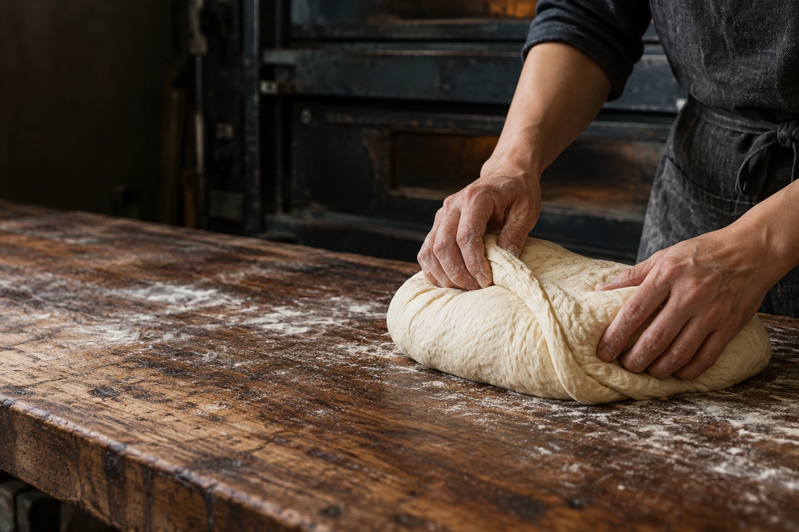
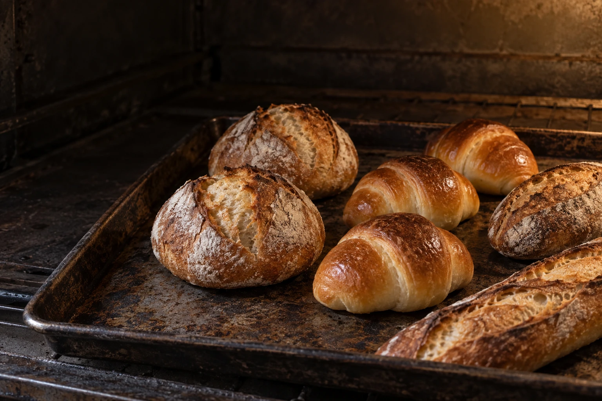
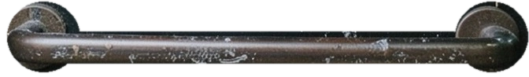
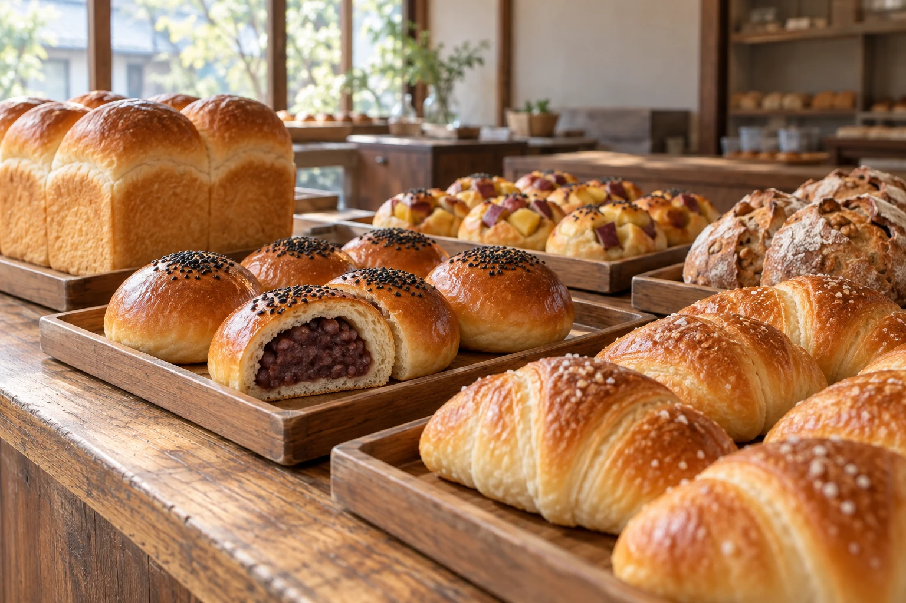
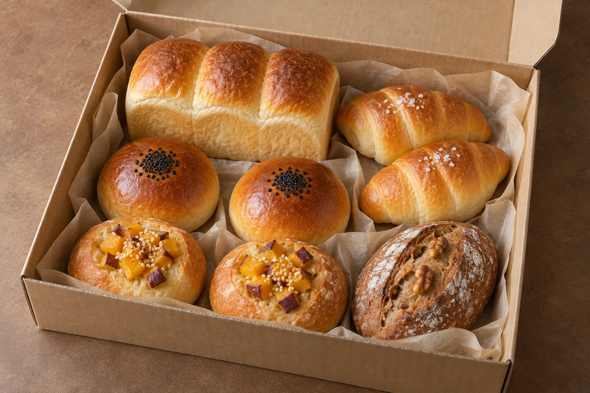
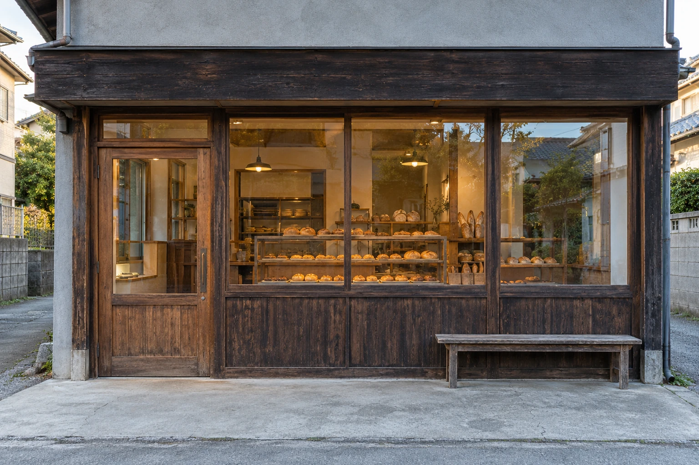

店主の手紙
父の「いつもの」を、
次の朝へ。
父が沖浜町に店を開いたのは、1999年の春でした。学校から帰ると、袋を折るのが私の手伝いでした。
店を継いでからも、山型食パンとあんパンの配合は変えていません。今も、同じ窯で焼いています。
朝に顔を合わせる方にも、遠くでパンを待つ方にも。同じ窯から、いつものパンをお届けします。
二代目店主（架空）田村 菜穂

おきのはま製パン
徳島・沖浜町 一九九九年から

取っ手を下に引いて、開ける
立体表示を読み込めませんでした。右下のボタンで扉を開閉できます。
毎日のパン
窯から出たら、いつもの場所へ。
今日のパンを、ゆっくりどうぞ。

焼き上がりの順に
1 / 6横に送って、パンを選ぶ ↔
焼き上がりは目安です。商品・価格は制作見本です。

店主の手紙
父が沖浜町に店を開いたのは、1999年の春でした。学校から帰ると、袋を折るのが私の手伝いでした。
店を継いでからも、山型食パンとあんパンの配合は変えていません。今も、同じ窯で焼いています。
朝に顔を合わせる方にも、遠くでパンを待つ方にも。同じ窯から、いつものパンをお届けします。
二代目店主（架空）田村 菜穂
沖浜から、全国へ

2,040円
山型食パン1斤。塩パンとあんパン、
鳴門金時のパンを各2個。
阿波晩茶とくるみのパンを1個。
送料980円。北海道・沖縄は1,480円。
1箱の送料込み合計は3,020円、北海道・沖縄は3,520円です。
水曜18:00締切、毎週金曜発送。製造日から冷凍で14日、解凍後は当日中にお召し上がりください。
価格・送料・発送条件は見本用です。
注文・決済はできません。

店の案内
7:00–18:00
日曜・月曜休み
売り切れ次第、早く閉める日があります。